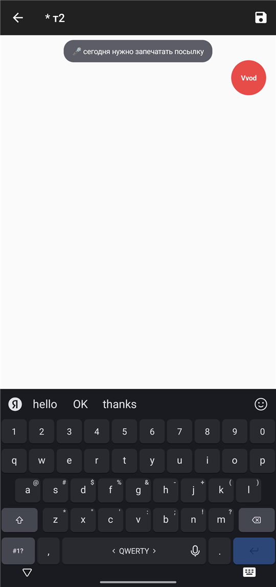
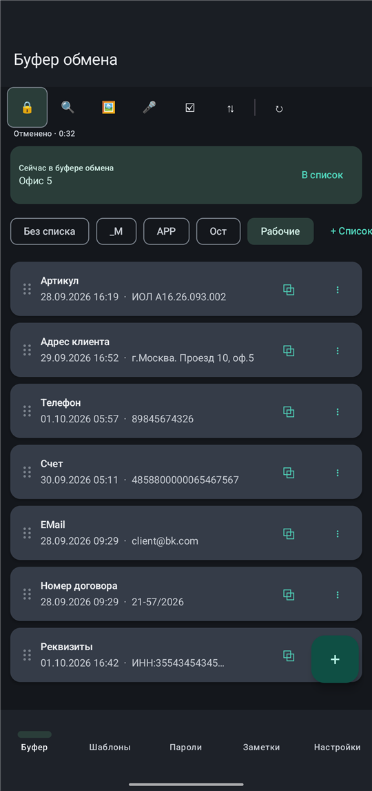
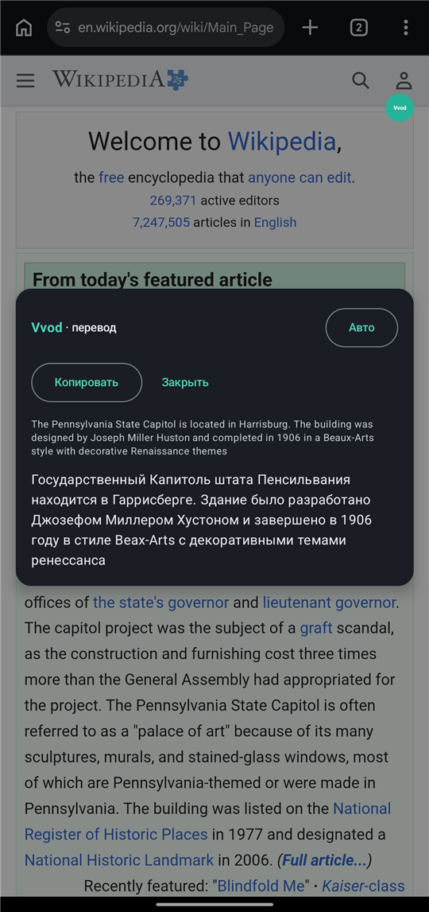
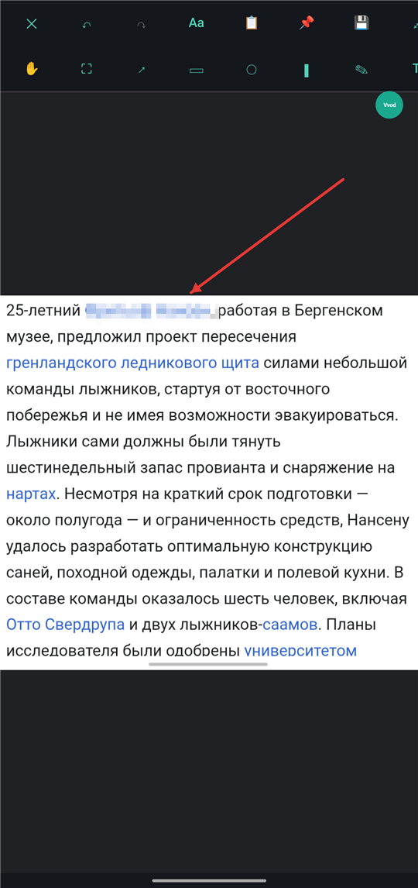
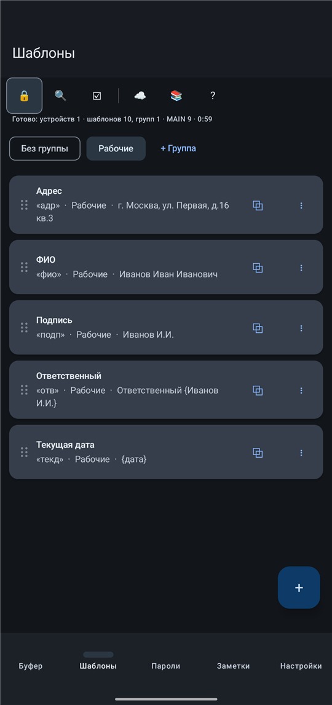
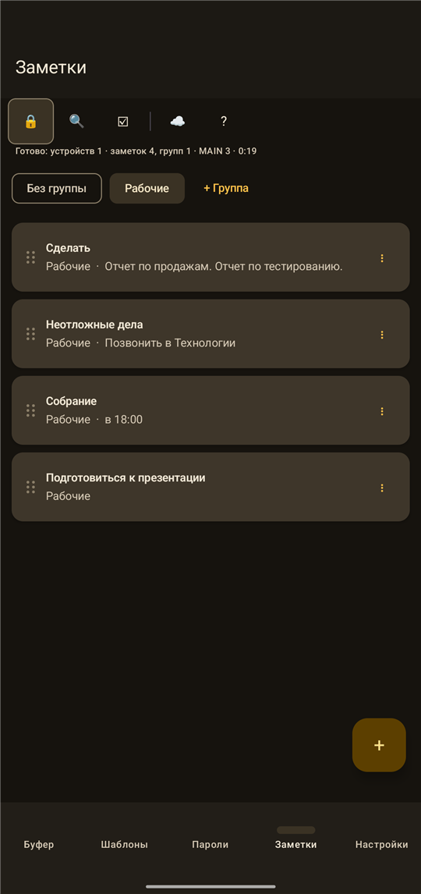
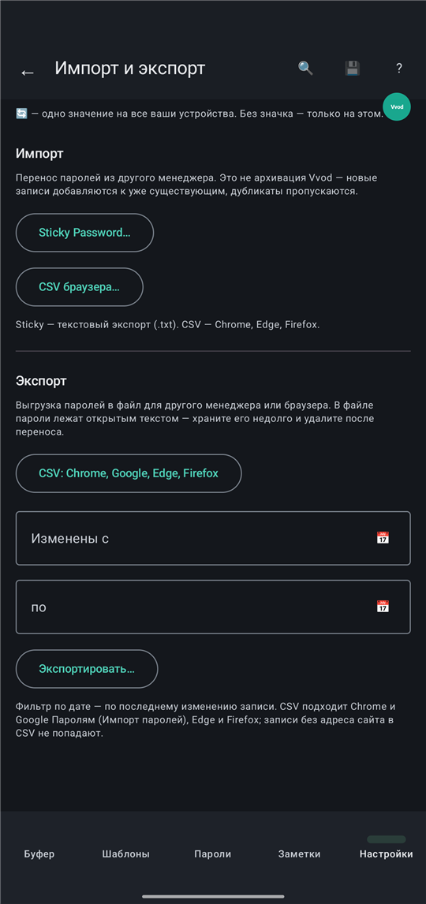

Скажите — Vvod напечатает
в любой программе
Диктовка вставляет готовый текст в активное окно чужого приложения. А ещё: история буфера обмена, шаблоны и сокращения, пароли с автозаполнением. Windows и Android, работает офлайн.
Бета-версия готовится к публикации в RuStore. Бесплатно; данные остаются у вас: своего сервера нет.
Как это выглядит







Что умеет
Диктовка
Нажали, сказали — текст появился там, где стоит курсор. Распознавание Vosk работает полностью офлайн.
Буфер обмена с историей
Всё скопированное сохраняется. Списки, поиск, закрепление, скрытые записи.
Шаблоны и сокращения
Набрали короткое — получили целый текст. Подстановка даты, времени и своих переменных.
Пароли
Автозаполнение в приложениях на Android и вставка по горячей клавише на Windows.
Синхронизация
Между вашими устройствами через ваше облако (Яндекс.Диск через API или WebDAV). Содержимое шифруется вашим мастер-паролем.
Горячие клавиши
Ctrl+Alt+B — буфер, Ctrl+Alt+K — шаблоны, Ctrl+Alt+P — пароли, Ctrl+Alt+D — диктовка.
Приватность
У Vvod нет своего сервера, нет аналитики и рекламы. Всё хранится на вашем устройстве; синхронизация — по желанию и только в вашу папку. Подробно: политика конфиденциальности.